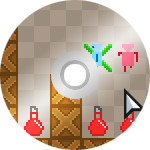

58. HaxeFlixel RPG: Source code
2014-10-29

Over the past 20 days I've been writing a tutorial series on creating a 2D RPG using Haxe, OpenFL and HaxeFlixel framework.
This is the final post, which contains links to the full source code and assets, as well as links to separate tutorial parts.
After following all the tutorial parts you will end up with a fully functional and extensible RPG.
This aim of this tutorial series was to acquaint you with the basics of the HaxeFlixel framework.
Let's take a look at the list of features that our game now has:
- Character is moved by clicking on the tilemap (via pathfinding).
- Camera can be moved around using the arrow keys or WASD.
- Enemies with wandering and chasing AI.
- Collectible health potions, which emit particles when picked up.
- Turn based combat.
- Experience and leveling.
- Health and damage depend on the player's level.
- Sounds effects.
- Ability to save and load the game locally.
All of the source code and assets can now be found at the GitHub repository.
If you want to follow the step-by-step guide on creating this game from scratch, check out the links below.
You'll firstly need to install HaxeFlixel. The whole process is described in this tutorial.
The tutorial series consists of 20 parts. Here they are:
- Project creation, menu screen, state switching.
- Displaying a tilemap.
- Camera and its movement.
- Movement marker placement.
- Character's movement using pathfinding.
- Character's sprite animation.
- Basic UI overlay.
- Health potions, collision.
- Advanced HUD: health, level and experience bar.
- Enemies and wandering AI.
- Enemies' chasing AI.
- Combat state machine.
- Turn based combat window.
- Combat improvements, experience rewards.
- Tween animations for the combat window.
- Sound effects.
- Saving the game.
- Advanced saving system.
- Particle emitters.
- Optimization.
Enjoy!